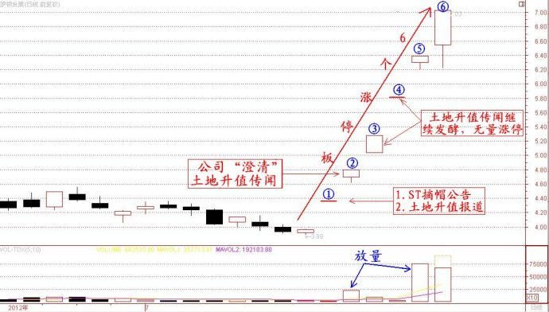

第212篇•教你炒股系列60:主升浪的形态（11）
谷为陵
正在我阐述“有隐含的利好题材”造就的超跌反弹“大阳线涨停板”型主升浪案例之时，恰好这几天又出现了一只这样的股票，这只股票就是罗顿发展（600209）。我今天就分析一下该股这几天的暴涨走势。
案例2：土地升值利好——罗顿发展（600209）
应该说，这几天罗顿发展的连续6个涨停板的暴涨方式，是较为典型的“有隐含的利好题材”造就超跌反弹“大阳线涨停板”型主升浪案例。这几天，罗顿发展连续能够走出6个涨停板，就是“超跌+隐含利好”造成的。
我们先看看该股的超跌情况。我前面谈到，易于产生超跌反弹主升浪的股票一般是投机性最强的品种，而小盘超跌低价股就属此类，而罗顿发展正属于小盘超跌低价股之列：其一，该股总股本4.4亿股，流通股3.75亿股，属于小盘股。其二，该股股价自2010年2月至今年1月，从最高价的17.79元跌到了最低的3.53元，跌幅达80%，属于暴跌。其三，该股股价在本轮暴涨前一直徘徊在4元附近，属于低价股。
我们再来看看该股的利好情况，该股这次的直接利好有两个：一是股票撤销特别处理，摘掉了ST帽子；二是“有隐含的利好题材”，该公司在10年前累计花2.6亿元在博鳌购买的1800亩地，现在升值了十几倍，这是一个巨大的利好。
我们来分析一下这两个利好是怎样对股价起作用的，下面是该股的日K线图：

在上图中，我对该股的6个涨停板都用带圈的数字进行了标记。
其第1个涨停板（用①标示）是一个无量的“一字板”，因该公司在7月16日公告摘掉了ST摘帽子这个利好，引发了该“一字板”。当然，现在回头来看，这个一字板并不完全是这个ST摘帽利好的功劳，其中包含了该股土地升值的利好传闻。因为，早在7月13日（周五），《每日经济新闻》就发了一篇题为“土地闲置样本——ST罗顿博鳌拿地十年价格翻10倍”的文章，只不过那天罗顿发展因停牌而没有交易，及至7月16日（周一）罗顿发展复牌后，该股就走出了一个“一字板”。我认为，这个一字板是ST摘帽利好与土地升值传闻共同作用的结果，只不过土地升值的传闻，对于没有看过《每日经济新闻》的投资者来说是不知道的，这是因信息不对称造成的信息盲区。
在第二天，罗顿发展对于土地升值一事进行了解释，并发了一个“澄清公告”。该公告从表面看是对土地升值进行“澄清”，但其内容却是承认土地升值确有其事。但该“澄清公告”在开盘前没有得到投资者的广泛重视——一是绝大多数投资者还不知道土地升值一事，二是
“澄清公告”不是上市公司发布的正规利好公告，很多投资者在开盘前的十几分钟里没来得及看或者仔细琢磨，这导致了该股在集合进价时没有直接涨停板，而是只高开了7.8%，但该股在开盘后买盘汹涌，两分钟就成交了2000万股并封住了涨停板。
现在看来，这个高开7.8%的集合进价以及开盘后的两分钟，就是该股在这轮主升浪里的“黄金买点”，一旦错过，那么，只能等到第5个涨停板（用⑤标示）去买了，因为随着该股土地升值利好的继续发酵，该股的这个利好已经被大众所知，这就使得买盘越来越多，而卖盘越来越少，导致该股的第3、4个涨停板都是无量“一字”涨停板，无法买进。
通过对于罗顿发展中6个涨停板的分析，我认为可将这6个涨停板可分为三个阶段，且可将参与者分为三类：
第一阶段是涨停板①和②，在此阶段进场的参与者属于对于公司信息极为关注的，能够在第一时间了解有关公司的传闻、公告，并能够快速采取行动。其中，能够在涨停板②的集合进价和开盘后两分钟抢进的投资者，抓住了“黄金买点”，艺高人胆大，应该属于短线高手。
第二阶段是涨停板③和④，在此阶段想进场的参与者属于对于公司信息理解以及估值具有相当高水平的投机者，因为他们知道在这个位置买进，还是有利可图的，但可惜的是，也许这样的投机者太多了，大家都想买，结果呢，都挤上了“独木桥”，谁也买不进去。
第三阶段是涨停板⑤和⑥，在此阶段进场的参与者属于胆大的投机者，因为在股市持续下跌的弱势情况下，还敢于在第5、6个涨停板追进，这说明这些投机者对风险的承担能力应该是很强的。特别是在今天，该股公告其大股东趁股价暴涨而减持了1900万元，这在股价高位应该算是一个利空，但这些投机者根本不惧这个利空，继续将涨停板进行到底，其勇气实在可嘉。
也许罗顿发展还能继续大涨，但短线追涨的风险是不言而喻的。通过对罗顿发展的分析，我们应该知道，对于“有隐含的利好题材”造就的超跌反弹“大阳线涨停板”型主升浪，其关键环节，就是要尽快在第一时间搞清楚这类股票的隐含利好，并尽可能及早介入。介入越早，收益越大，而介入晚了，不是买不到，就是有风险。总之，这类股票属于短线高手的狙击目标，普通投资者难以应付。